TP base de libreoffice

schéma relationnel de la base de données films-realisateurs, base de libreoffice
TP Browser SQL: Base, SQLite Browser, Access
Base de données sur FILMS et REALISATEURS
Base de Libre Office
Démarrage
Lancer Libre Office > Base. Au demarrage:
- choisir “Créer une nouvelle base de données”
- nommer cette base de données. Par exemple
films_cultes. L’extension placée par le logiciel est.obd
Structurer et renseigner les données
Commençons par créer les 2 tables films et realisateurs.
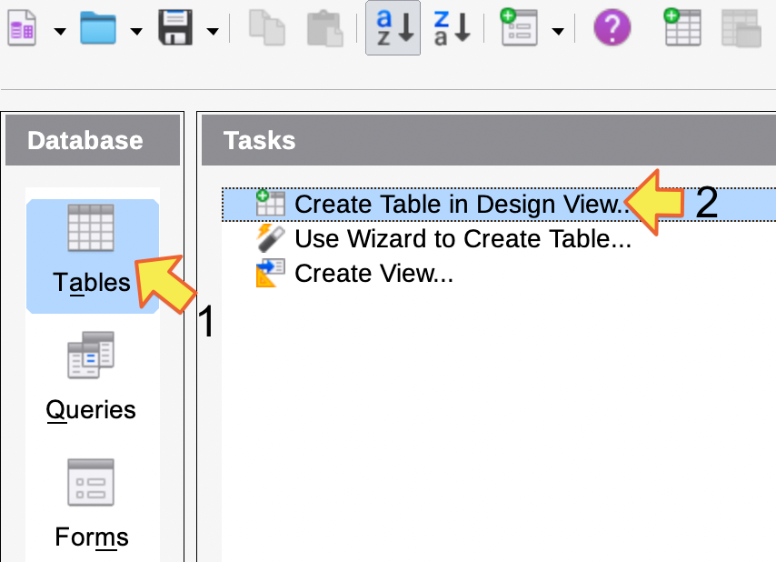
créer une nouvelle table
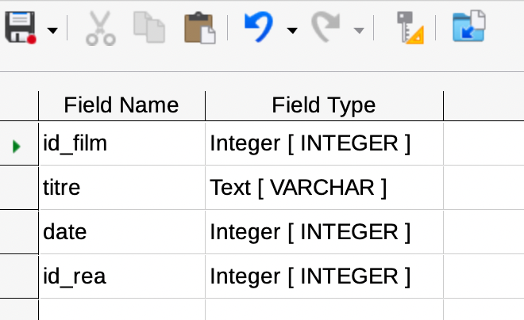
remplir les champs nom et domaine pour chaque attribut
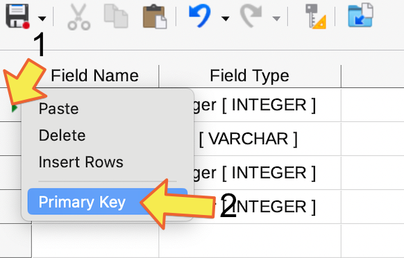
1: selectionner la colonne de l'attribut id_films, 2: clic droit, choisir Primary Key
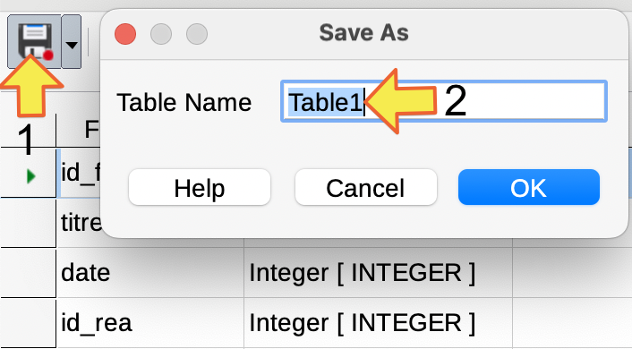
1: sauvegarder la table, 2: renseigner le nom: films
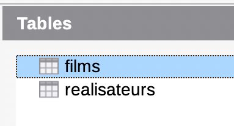
faire de même pour créer la table realisateurs
On va maintenant créer une association entre les 2 tables.
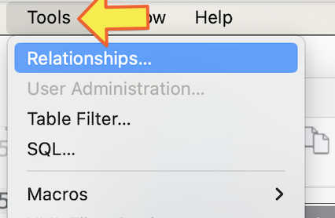
menu Tools: choisir Relationships
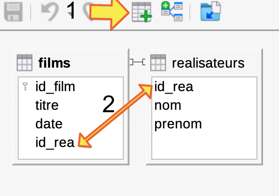
1: ajouter chacune des tables dans le canvas, 2: cliquer sur films.id_rea et le glisser sur realisateurs.id_rea
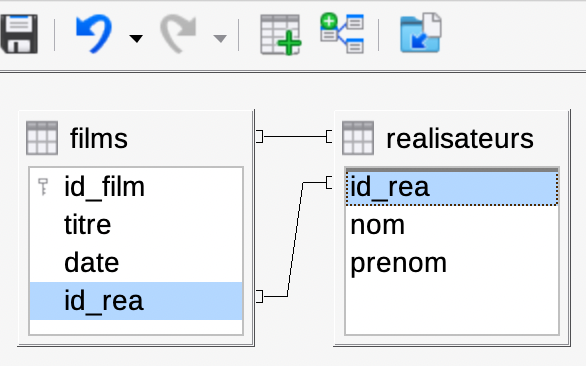
bravo! vous avez créé l'association entre les 2 tables
La clé secondaire films.id_rea est maintenant liée à la clé primaire realisateurs.id_rea.
Il reste maintenant à renseigner les données pour chacune des tables. Commencer par celle realisateurs. Car les tables sont liées par l’attribut realisateurs.id_rea
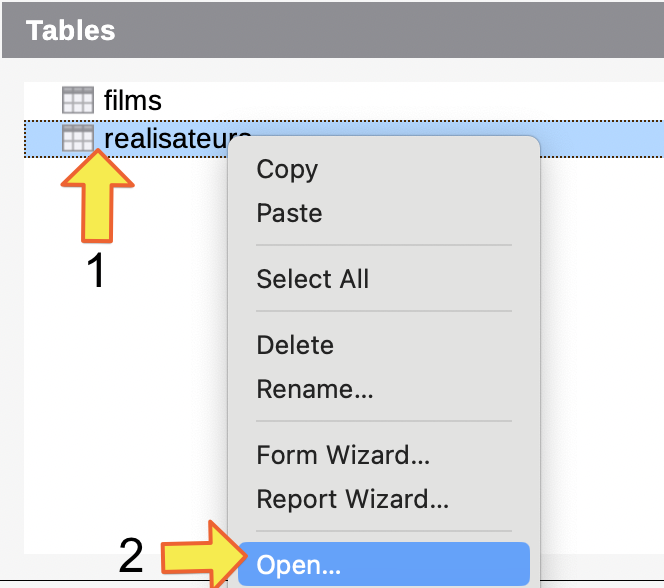
1: clic droit sur la table realisateurs, 2: open
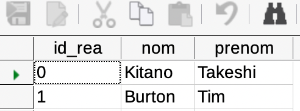
renseigner les données
| id_rea | nom | prenom | annee_naissance |
|---|---|---|---|
| 1 | Kitano | Takeshi | 1947 |
| 2 | Burton | Tim | 1958 |
| 3 | Tarantino | Quentin | 1963 |
| 4 | Tati | Jacques | 1907 |
| 5 | Hitchcock | Alfred | 1899 |
| 6 | Almodovar | Pedro | 1949 |
| 7 | Kitamura | Ryûhei | 1969 |
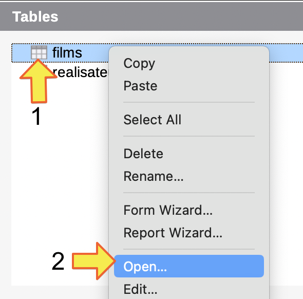
puis ouvrir la table films
| id_film | titre | date | id_rea |
|---|---|---|---|
| 1 | Hana-bi | 1997 | |
| 2 | Big fish | 2003 | |
| 3 | Edward aux mains d’argent | 1990 | |
| 4 | Sonatine | 1993 | |
| 5 | Pulp Fiction | 1995 | |
| 6 | Play Time | 1967 | |
| 7 | Vertigo | 1958 | |
| 8 | Psychose | 1960 | |
| 9 | Parle avec elle | 2002 | |
| 10 | Mon oncle | 1958 | |
| 11 | Volver | 2006 | |
| 12 | Reservoir Dogs | 1992 | |
| 13 | Alive | 2003 | |
| 14 | Godzilla: Final Wars | 2004 |
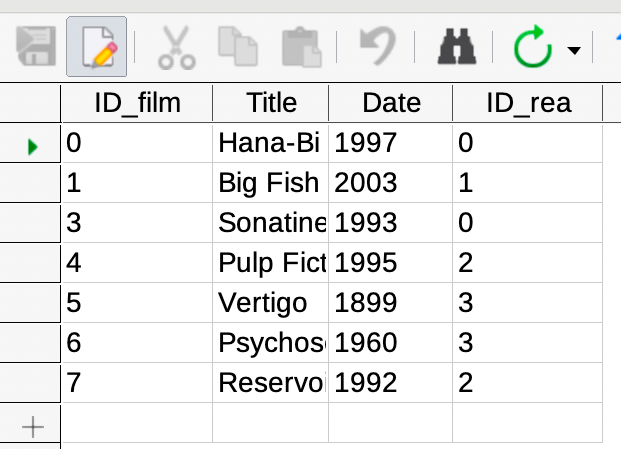
renseigner les données
Requêtes sur la base de données
Les requêtes seront réalisées en mode interactif pour démarrer.
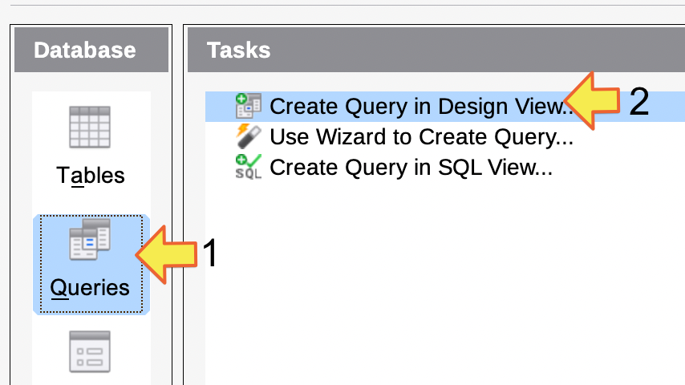
Choisir 1. Database Queries puis 2. Design View
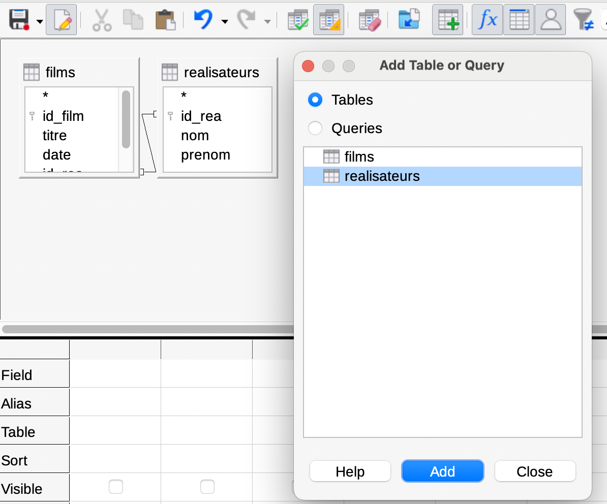
Ajouter les tables films et realisateurs dans le canvas
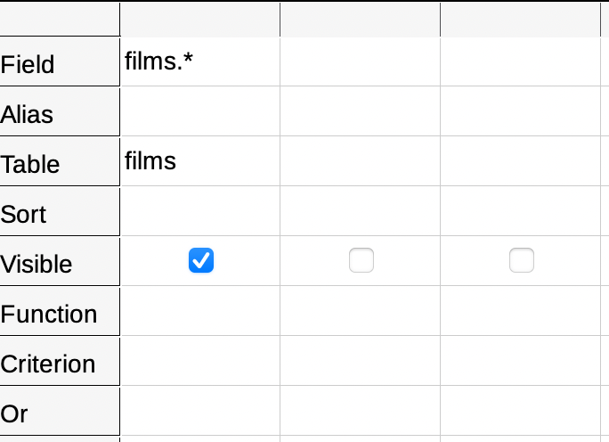
construire la requête comme sur l'image ci-contre
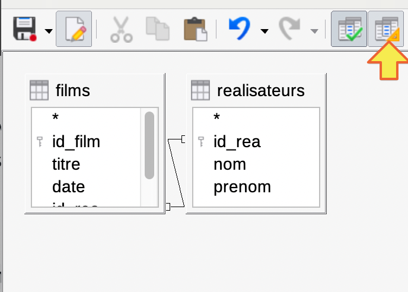
passer en mode SQL avec le bouton (jaune) de la barre de menu
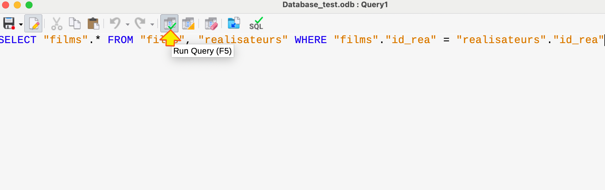
Executer la requête SQL avec le bouton (vert)
Observer la vue présentée par le logiciel (tableau). Cette vue peut être obtenue avec une instruction plus simple en SQL.
Mettre les symboles -- devant l’instruction SQL pour la mettre en commentaire.
Ajouter l’instruction SQL: SELECT * FROM films
Executer. Vous obtenez le même résultats…
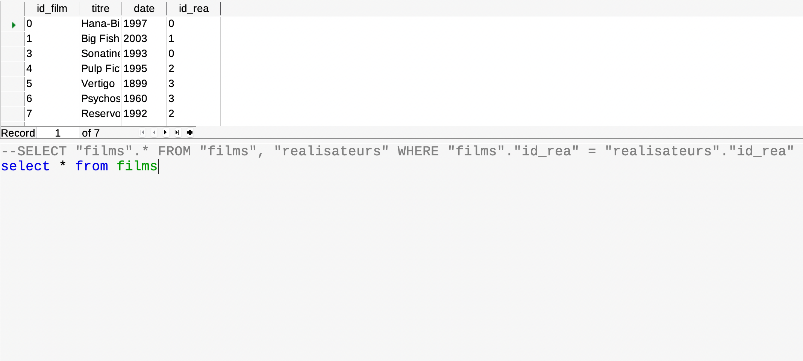
saisie directe d'une requête SQL
Tester une nouvelle requête en mode Design View
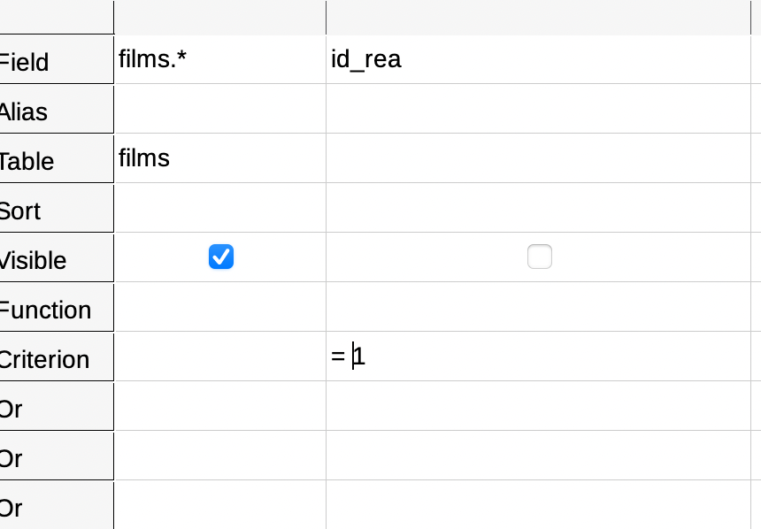
nouvelle requête
Cette fois, on ajoute une clause sur la valeur de id_rea. Mais sans afficher l’attribut (Visible non coché).
Recopier la requête SQL générée. Executer.
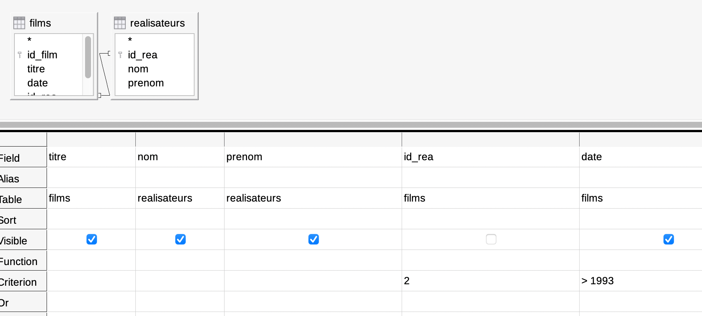
nouvelle requête
Pour cette nouvelle requête en mode visuel, on selectionne des attributs des 2 tables. On applique certaines clauses.
En mode SQL: Remarquer que la clause "films"."id_rea" = "realisateurs"."id_rea" s’est mise automatiquement.
Recopier cette requête SQL.
Executer.
Questions: Ecrire les requêtes SQL pour…
- Afficher toute la table
films - Corriger la date de parution du film Vertigo (se renseigner sur le net)
- Afficher tous les attributs du-des film-s dont le réalisateur est le 1er de la table
realisateurs - tous les titres des films sortis après 1970 mais avant 2002
- le titre du film, la date de sortie le nom du realisateur pour
id_reaegal à 2 - tous les noms des auteurs de films qui ont sorti des films après 1960, mais pas Jacques Tati.
- l’année de naissance du réalisateur de Reservoir Dogs ?
- Le nombre de films du réalisateur “Hitckock”
- Inventer une nouvelle information à partir de cette base de donnée, necessitant une jointure entre les tables.
SQLite DBrowser
- une version portable du logiciel peut être téléchargée ici: sqlitebrowser.org
- Notice: Consulter la notice
Vous pouvez aussi construire les 2 tables avec SQLite DBrowser:
- Commencer par construire la table realisateurs, puis celle films. Bien renseigner les clés primaires (PK) pour ces 2 tables, ainsi que la clé étrangère pour films
- ajouter les lignes à chaque table, ici aussi, en commençant par realisateurs
Solutions
Tester alors les instructions SQL suivantes… Recopier ensuite l’instruction et expliquer dans chaque cas ce qui est renvoyé:
- requête 1:
SELECT * FROM films - requête 3:
- requête 4:
- requête 5: Deux possibiltés:
ou bien, en précisant la jointure avec INNER JOIN
Compléments
La table en version sqlite se trouve ici: films.db